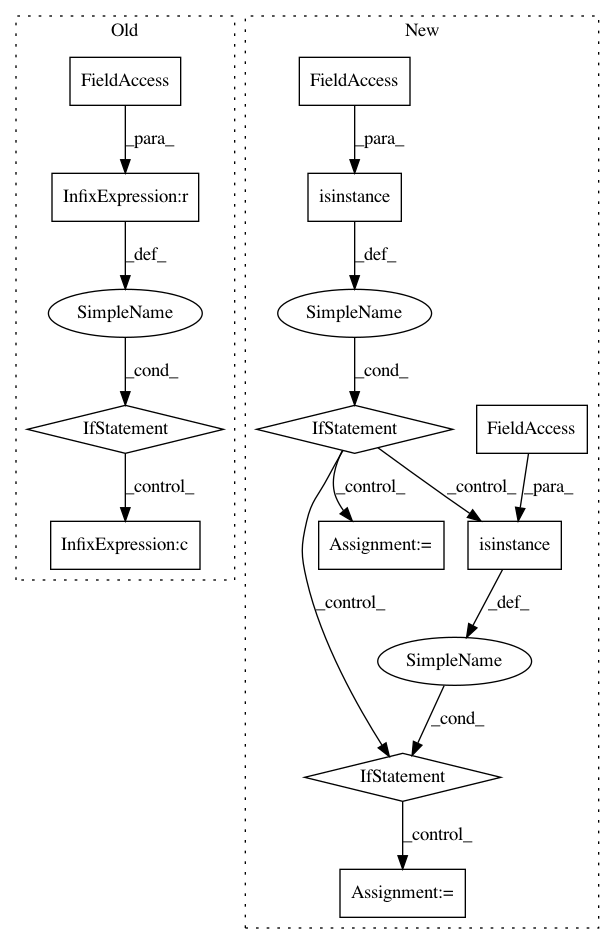

74dd9e13dd120056e8de90755cb13a433802e2e2,src/metamodels/cgpm_metamodel.py,,_retrieve_analyze_variables,#Any#Any#Any#,1458
Before Change
raise BQLError(bdb, "Unknown clause in ANALYZE: %s." % (ast,))
// Targeted analysis with the LOOM backend is not supported.
if seen_optimized and seen_optimized.backend == "loom":
if seen_skip or seen_variables:
raise BQLError(bdb,
"LOOM analysis does not targeted analysis on variables.")
variable_numbers = [
core.bayesdb_variable_number(bdb, population_id, generator_id, v)
for v in variables
] if variables else None
After Change
variables = sorted(set(all_vars) - excluded)
// Transition rows specified by user.
elif isinstance(clause, cgpm_analyze.parse.Rows):
if rowids is None:
rowids = []
rowids.extend(clause.rows)
// Specify which transition subproblems to run.
elif isinstance(clause, cgpm_analyze.parse.Subproblem):
if subproblems is None:
subproblems = []
subproblems.extend(clause.subproblems)
// Optimized non-cgpm analysis.
elif isinstance(clause, cgpm_analyze.parse.Optimized):
In pattern: SUPERPATTERN
Frequency: 3
Non-data size: 12
Instances
Project Name: probcomp/bayeslite
Commit Name: 74dd9e13dd120056e8de90755cb13a433802e2e2
Time: 2017-07-19
Author: fsaad@mit.edu
File Name: src/metamodels/cgpm_metamodel.py
Class Name:
Method Name: _retrieve_analyze_variables
Project Name: Microsoft/nni
Commit Name: b7366b685afdde156e551f8ba5008857f789e368
Time: 2019-02-11
Author: 871886504@qq.com
File Name: tools/nni_annotation/code_generator.py
Class Name:
Method Name: test_variable_equal
Project Name: analysiscenter/batchflow
Commit Name: dcbfeceae637c576a1494e230375dbd682954e3d
Time: 2019-11-29
Author: rhudor@gmail.com
File Name: batchflow/components.py
Class Name: ComponentsDict
Method Name: crop